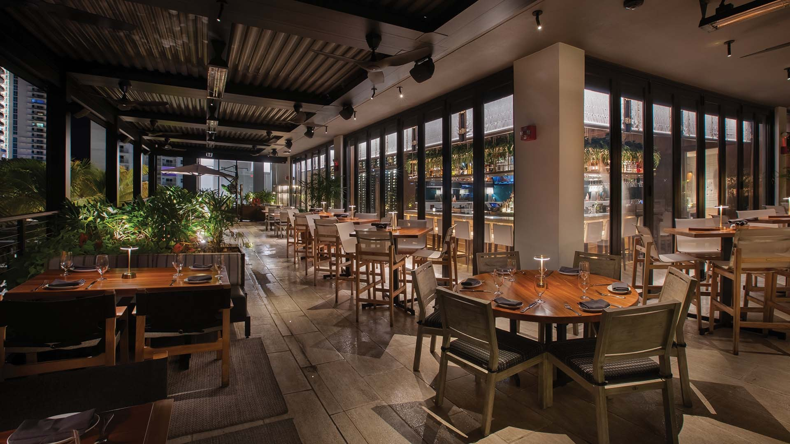

Ocean Prime - Pier Sixty-Six
A flagship of the Ocean Prime restaurant group on the Fort Lauderdale waterfront at Pier Sixty-Six - multi-level fine dining wrapped in dark-framed glazing, with a Euro-Wall folding wall that opens the dining room to the water.
The dining room, the terrace, and the water - one continuous room.
Ocean Prime at Pier Sixty-Six is a flagship location of the Ocean Prime restaurant group - a multi-level fine dining and bar concept sitting directly over the water on the Fort Lauderdale waterfront. Ground-floor and second-floor dining and terrace spaces are all wrapped in the dark-framed commercial glazing that defines the brand's aesthetic.
Cameron Mitchell Restaurants' architectural premise for the space was that the dining room, terrace, and water had to read as one continuous room. That only works if the glazing disappears. A standard sliding-door sub would install sliding doors - what the project needed was a fold-back wall that clears the entire opening, lands flush in the sill, and still seals against Florida wind-driven rain when it closes.
ACG installed the complete Euro-Wall folding wall package along the waterfront elevation, plus the commercial storefront and glazing package across both levels - the full-height glass facades that let guests see in and see out, the glass partitions and enclosures that define the dining spaces from the terrace, and the entrance systems that set the tone before anyone steps inside. Because ACG installs Euro-Wall systems across Florida, every track, hinge, threshold, and weather seal was specified, shipped, and installed under one accountable sub.
Kobi Karp's drawings called for razor-minimal sightlines and a flush threshold to the terrace. ACG worked through sill detailing and structural coordination with the waterfront slab in the shop-drawing phase to deliver the result the renderings promised - for Buckeye Hospitality Construction LLC, a GC that specializes in hospitality build-outs across Florida and understands that in restaurant construction, the glass is a key part of the guest experience.

On the water, on brand.



Imagery courtesy Ocean Prime Fort Lauderdale.
How ACG delivered it.
18,000 SF of waterfront dining
The Euro-Wall fold-back wall clears the entire waterfront opening and lands flush in the sill - roughly 18,000 square feet of waterfront dining opened seamlessly at one of Fort Lauderdale's highest-visibility restaurants.
One accountable sub
As the Euro-Wall installer on this project, ACG carried the folding wall from specification through installation - no coordination seam between supplier and installer.
Coastal performance
High-visibility hospitality on the water: the glazing had to match the brand's premium positioning and withstand the coastal environment - every frame, every seal, every unit.
More from the portfolio.


Your project could be next.
Restaurants, hospitality, retail - ACG delivers the glazing scope on time and on brand. Send your plans and get a complete scope in 48 hours.